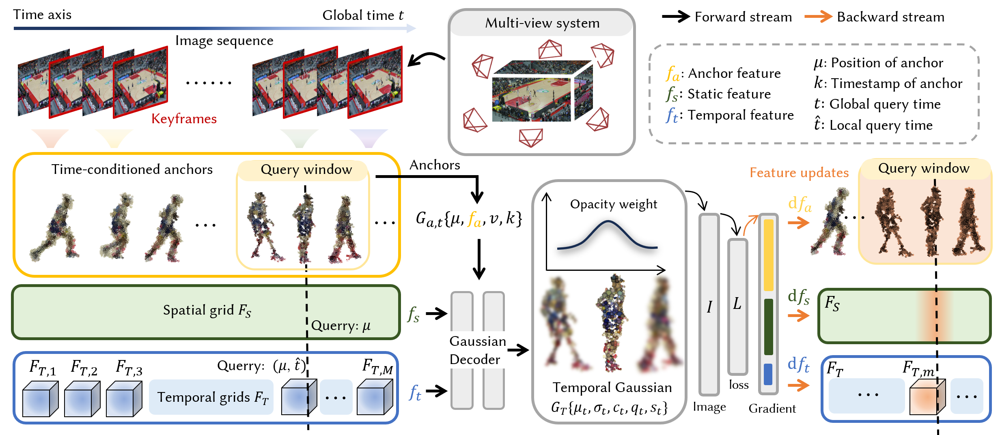

Volumetric video enables immersive free viewpoint rendering of dynamic real world scenes, yet existing methods struggle with long sequences and complex motions, often leading to temporal instability and visual artifacts. To address these challenges, we propose ATGS, a Gaussian splatting based framework for volumetric video reconstruction. Our key insight is that explicitly tracking long term complex motion with individual Gaussian primitives is inherently unstable. Instead, we organize Gaussians around time conditioned anchors that localize their spatial and temporal support, thereby reducing long range motion complexity. We further introduce a temporal windowing strategy to activate only anchors relevant to the queried time, which improves scalability and temporal coherence. In addition, to ensure spatial and temporal stability, we design a compact set of multi level anchor features that encode global features, local spatial features, and local temporal features, jointly constraining Gaussian generation. Extensive experiments demonstrate that ATGS consistently outperforms prior methods on long sequence volumetric videos with complex motions.
We present ATGS, a novel framework for volumetric video reconstruction that effectively handles long sequences and complex motions. By utilizing time-conditioned anchors and a temporal windowing strategy, ATGS enhances temporal coherence and scalability. Our approach outperforms existing methods, delivering high-quality volumetric videos with improved stability and detail.
Our method demonstrates significantly superior modeling quality over previous approaches in long-sequence, large-motion scenarios.
LocalDyGS (one Clip)
LocalDyGS (140 Clips, flickering)
4DGaussian (One Clip)
Ours (One Clip)
Our method demonstrates impressive performance in the MeetRoom dataset, effectively capturing intricate details and dynamics.
4DGaussian
LocalDyGS
Ours
Our method achieves superior reconstruction fidelity for both dynamic objects (e.g., athletes) and static regions (e.g., floor textures) in scenes with large-scale motions.
3DGStream
SpaceTimeGS
4DGaussian
Ours